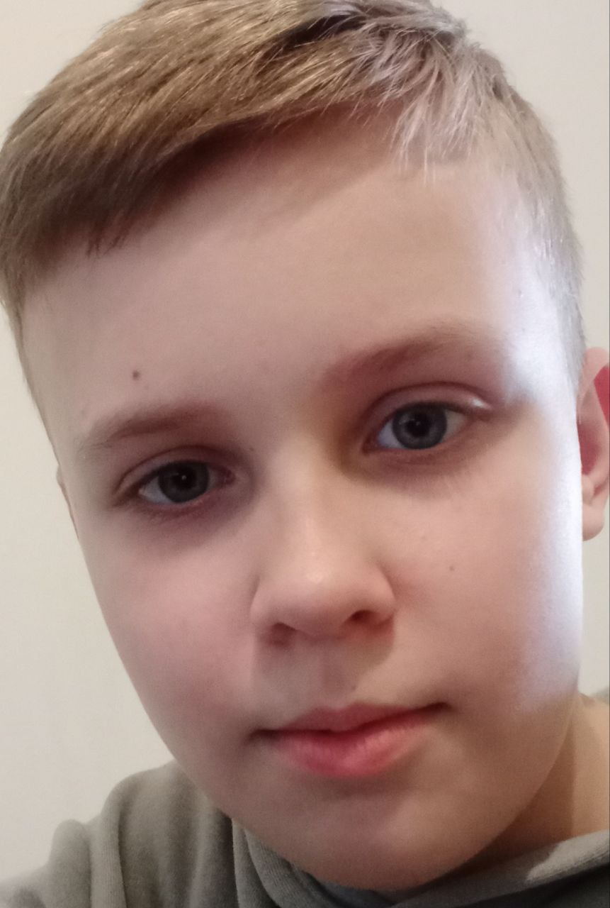

About me
Мене звати Денис, мені 13 років, я учень 7 класу. Раніше я жив у місті Мелітополь, а зараз проживаю в Ужгороді. Окрім навчання, я цікавлюся сучасними технологіями та програмуванням. Окрім програмування, я захоплююся грою в комп'ютерні ігри, які допомагають розвивати стратегічне мислення та реакцію. Мені цікаво вдосконалювати свої знання в IT-сфері, і я планую у майбутньому створювати сучасні та функціонально веб-проєкти, а можливо, навіть стати розробником ігор. Моя мета — навчитися новим технологіям, брати участь у конкурсах і розвиватися у сфері програмування, щоб стати професіоналом у цій галузі.
Skills
Я займаюся програмуванням і створенням веб-сайтів. У мене є базові знання у використанні HTML, CSS та JavaScript. Я також починаю вивчати принципи роботи з базами даних та працюю над покращенням своїх навичок у веб-дизайні, використовуючи графічні редактори. Можу працювати з Blender анімаціями та моделями.

Works
Я створив різноманітні проєкти, які демонструють мої навички у HTML, CSS та JavaScript.
Математичні задачі:
Проєкти для математичних обчислень: факторіал, степінь числа, площа та периметр фігур.
Обробка тексту:
Функції для аналізу тексту на спам, роботи з алфавітом та емодзі.
Інтерактивні інструменти:
Програми для введення даних, обчислення сум, середніх значень та інших результатів.
Анімація та графіка:
Експерименти з анімаціями та візуальними ефектами для покращення дизайну.
Ці проєкти допомагають мені вдосконалювати навички та створювати корисні інструменти.